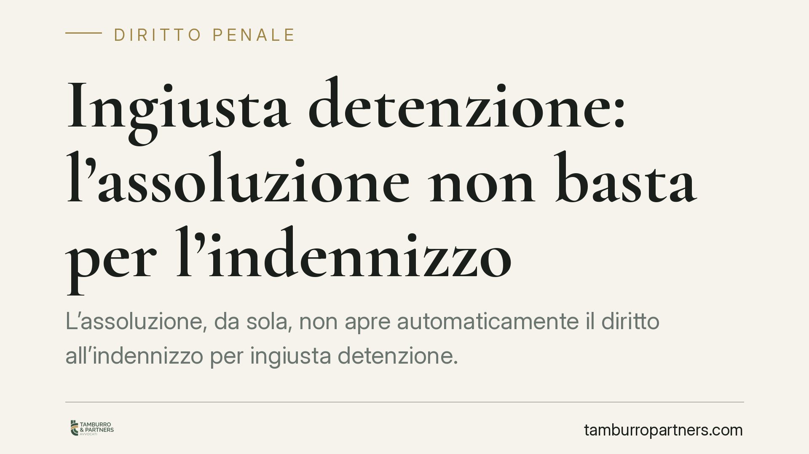

Ingiusta detenzione: l'assoluzione non basta per l'indennizzo
L'assoluzione, da sola, non apre automaticamente il diritto all'indennizzo per ingiusta detenzione. In una recente pronuncia la Corte di Cassazione ha ribadito l'autonomia del giudizio riparatorio rispetto al merito penale e gli ampi poteri di rivalutazione del giudice del rinvio, confermando il peso di dolo e colpa grave nella condotta dell'ex detenuto.

Il fatto
Il tema torna d'attualità per effetto di una recente pronuncia della Corte di Cassazione (riferimento in corso di verifica editoriale), che ha riaffermato un principio consolidato ma spesso frainteso: chi è stato assolto non ha, per ciò solo, diritto a essere indennizzato per il periodo trascorso in custodia cautelare.
Il giudizio sulla riparazione viaggia su un binario distinto da quello penale. L'esito liberatorio del processo è un presupposto, non una garanzia automatica di ristoro.
Inquadramento normativo
La materia è regolata dall'art. 314 del codice di procedura penale. La norma distingue due ipotesi.
La prima, prevista dal comma 1, è l'ingiustizia sostanziale: spetta la riparazione a chi è stato prosciolto con sentenza irrevocabile perché il fatto non sussiste, non ha commesso il fatto, il fatto non costituisce reato o non è previsto come reato. Qui il titolo custodiale si rivela, a posteriori, privo di fondamento di merito.
La seconda, prevista dal comma 2, è l'ingiustizia formale: riguarda i casi in cui la custodia è stata applicata o mantenuta in violazione dei presupposti di legge (ad esempio in assenza delle condizioni di cui agli artt. 273 e 280 c.p.p.), a prescindere dall'esito del processo.
Il punto decisivo è il limite interno fissato dalla norma: il diritto all'indennizzo è escluso quando l'ex detenuto ha dato o concorso a dare causa alla custodia per dolo o colpa grave. È su questo crinale che molte istanze si arrestano, anche dopo un'assoluzione piena.
L'autonomia del giudizio riparatorio
Il giudice della riparazione non riesamina la colpevolezza. Compie una valutazione autonoma della condotta tenuta dall'interessato, dentro e fuori il processo, per verificare se quella condotta abbia indotto o rafforzato il quadro indiziario posto a base della misura.
Comportamenti reticenti, dichiarazioni mendaci, l'essersi sottratti alle indagini, il frequentare ambienti o soggetti compromettenti: sono tutti elementi che il giudice può leggere come colpa grave idonea a escludere l'indennizzo, pur in presenza di un'assoluzione nel merito.
È una lettura che prescinde dalla rilevanza penale di quei comportamenti. Ciò che rileva è il loro effetto causale sull'applicazione della cautela.
I poteri del giudice del rinvio
Quando la Cassazione annulla con rinvio una decisione in materia di riparazione, il giudice designato non è vincolato alla ricostruzione precedente. Dispone di ampi poteri di rivalutazione del materiale, entro i limiti posti dalla sentenza di annullamento.
Questo significa che l'esito non è mai scontato: un primo provvedimento favorevole può essere ribaltato, e viceversa. La condotta dell'interessato viene riponderata nel suo complesso, con una motivazione che deve dar conto del nesso tra quella condotta e la misura subita.
Implicazioni pratiche
Per chi ha subito una custodia cautelare poi conclusasi con assoluzione, il messaggio è che l'istanza di riparazione non è un passaggio automatico. Va costruita.
Il terreno su cui si gioca è la ricostruzione analitica della condotta processuale e la lettura della motivazione della sentenza di assoluzione, per isolare gli elementi che possono essere qualificati come colpa grave e per anticiparne la neutralizzazione.
Sul piano dei tempi, l'art. 315 c.p.p. fissa un termine di decadenza di due anni per proporre la domanda. Il termine decorre dal momento in cui la decisione è divenuta irrevocabile; la giurisprudenza, tuttavia, ha affrontato in più occasioni la questione del dies a quo, ancorandolo in alcuni casi a eventi successivi come il deposito o la comunicazione del provvedimento. La materia richiede quindi un riscontro puntuale sul singolo caso.
Cosa fare in concreto
- Verificare con esattezza la data di irrevocabilità della decisione e il conseguente termine di cui all'art. 315 c.p.p., tenendo conto della casistica sul dies a quo.
- Ricostruire in modo documentato la condotta tenuta durante le indagini e il processo, individuando ciò che può essere letto come dolo o colpa grave.
- Analizzare la motivazione della sentenza di assoluzione per distinguere l'ingiustizia sostanziale da quella formale.
- Raccogliere gli atti rilevanti (ordinanze cautelari, verbali, provvedimenti di scarcerazione) prima del deposito dell'istanza.
- È opportuna una valutazione tecnica preliminare della fondatezza della domanda, data l'autonomia del giudizio riparatorio e l'imprevedibilità della rivalutazione in sede di rinvio.
Contributo informativo a cura di Tamburro & Partners - Avv. Giuseppe Tamburro. Non costituisce parere legale.
Ogni condominio ha una storia a sé.
Se gestisci un'amministrazione e vuoi un confronto su una specifica questione condominiale, scrivi allo studio. Ti rispondiamo entro un giorno lavorativo.